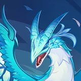

Mở Đầu · Màn I.1
Ba Ngôi Đền Của Tứ Phong
Nhiệm vụ bắt buộc để hoàn thành Màn I — Amber, Kaeya, Lisa
Nhân vật xuất hiện
 Nhân vật chính · Nhà Lữ HànhLumineNhà Lữ Hành đến từ thế giới khác. Bị vị thần lạ mặt phong ấn và cướp mất người anh song sinh, cô bắt đầu hành trình đi tìm Bảy Vị Thần của Teyvat.
Nhân vật chính · Nhà Lữ HànhLumineNhà Lữ Hành đến từ thế giới khác. Bị vị thần lạ mặt phong ấn và cướp mất người anh song sinh, cô bắt đầu hành trình đi tìm Bảy Vị Thần của Teyvat. Bạn đồng hànhPaimonĐược Lumine cứu khỏi chết đuối hai tháng trước, Paimon tự nhận làm người dẫn đường cho cô. Hay ăn, hay nói, và rất ghét bị gọi là “thực phẩm dự trữ”.
Bạn đồng hànhPaimonĐược Lumine cứu khỏi chết đuối hai tháng trước, Paimon tự nhận làm người dẫn đường cho cô. Hay ăn, hay nói, và rất ghét bị gọi là “thực phẩm dự trữ”.- Kỵ Sĩ Trinh Thám · Đội Kỵ Sĩ Tây PhongAmberCô gái nhiệt huyết, Kỵ Sĩ Trinh Thám cuối cùng của Đội Kỵ Sĩ. Gặp Lumine trên đường đến Mondstadt, đã hộ tống cô vào thành và tặng cô Phong Chi Dực.
- Đội Trưởng Kỵ Binh · Đội Kỵ Sĩ Tây PhongKaeyaKiếm sĩ có vẻ ngoài ngoại quốc với miếng bịt mắt, lời nói luôn nửa đùa nửa thật. Đã chứng kiến Lumine đẩy lui Phong Ma Long.
- Quản lý thư viện · Đội Kỵ Sĩ Tây PhongLisaMa pháp sư thông thái nhưng có phần biếng nhác. Nhờ ma pháp của cô mà Đội Kỵ Sĩ tìm ra nguồn gốc cơn bão.
 Đội Trưởng Đại Diện · Đội Kỵ Sĩ Tây PhongJean“Người Thủ Hộ Mondstadt”, đang gánh vác Đội Kỵ Sĩ khi đại đội trưởng đi xa. Người lên kế hoạch thanh lý ba ngôi đền Tứ Phong Thủ Hộ.
Đội Trưởng Đại Diện · Đội Kỵ Sĩ Tây PhongJean“Người Thủ Hộ Mondstadt”, đang gánh vác Đội Kỵ Sĩ khi đại đội trưởng đi xa. Người lên kế hoạch thanh lý ba ngôi đền Tứ Phong Thủ Hộ.- NChưa rõ danh tínhNgười đàn ông tóc đỏXuất hiện sau khi Lumine rời Đền Sói Bắc Phong, hạ gục Pháp Sư Vực Sâu trước mặt Kaeya.
- PKẻ đứng sauPháp Sư Vực SâuKẻ đã giật dây đám Hilichurl phục kích ở Đền Sói Bắc Phong.

Tên thật của Phong Ma LongDvalinTheo lời Lisa, Dvalin từng là Rồng Đông Phong trong Tứ Phong Thủ Hộ trước khi bị gọi là Ma Long.
Các chương
- Chương 1Gió Của Ngày Cũ
- Chương 2Luyện Tập Hiện Trường Của Kỵ Sĩ
- Chương 3Điện Hỏa Hoa Trong Trang Sách
- Kết MànTrở Về Đội Kỵ Sĩ
Toàn bộ lời thoại được lấy từ bản tiếng Việt chính thức của trò chơi. Ở những đoạn người chơi được chọn câu trả lời, truyện chọn một lựa chọn duy nhất.